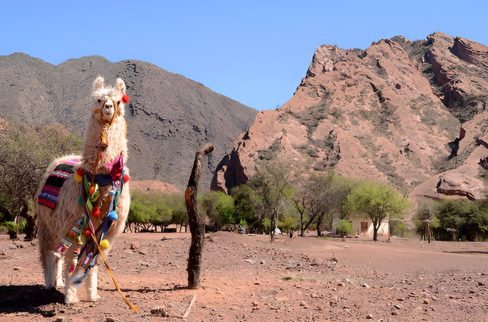
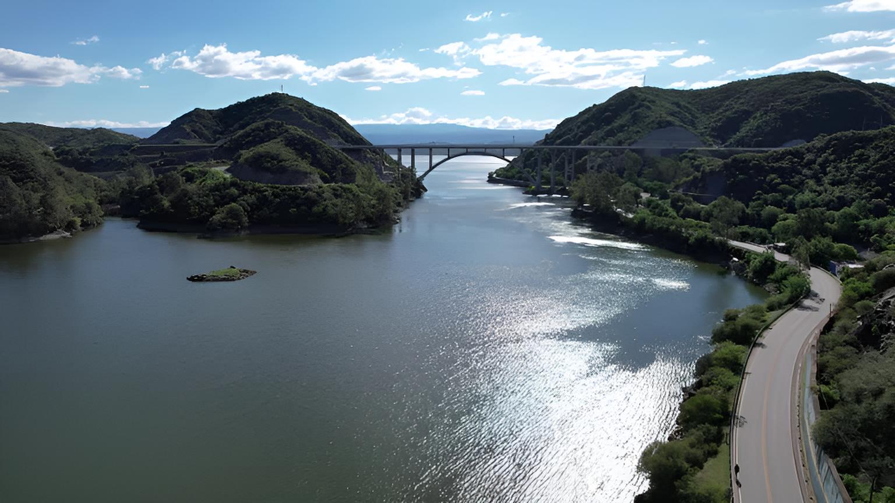
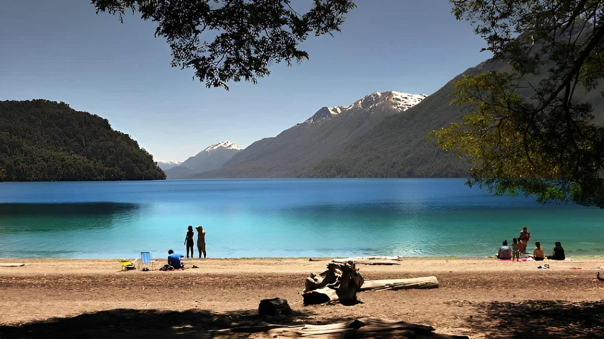
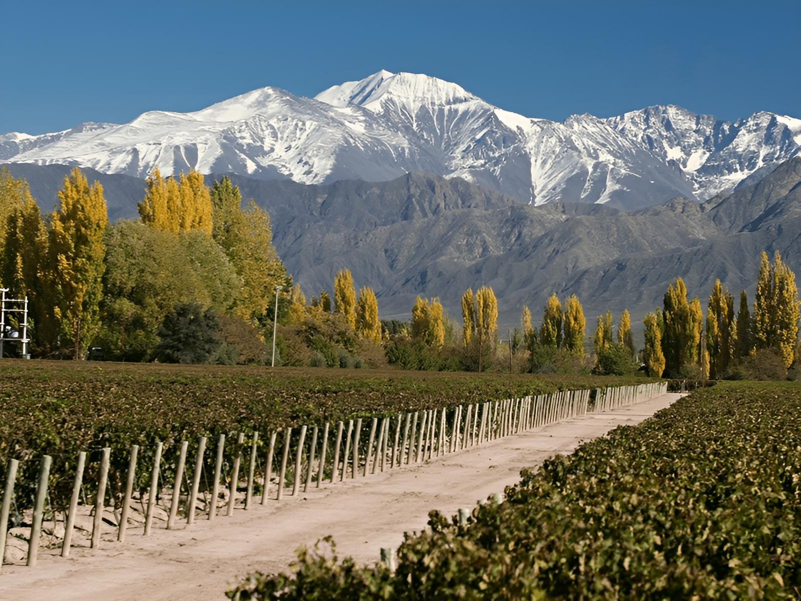

Viajes por Argentina
Inicio
Sobre mí
Artículos
Contacto
Explorá por Categoría
Descubrí los rincones más increíbles del país, organizados por región 🌎
Viajes del Norte

Salta, la linda
Purmamarca: el Cerro de los Siete Colores
Tilcara: historia y naturaleza
Cataratas del Iguazú: maravilla natural
Viajes del Centro

Buenos Aires: la ciudad que nunca duerme
Villa Carlos Paz: diversión y paisaje
La Cumbrecita: pueblo peatonal entre montañas
Gualeguaychú: naturaleza y carnaval
Viajes del Sur

Bariloche: naturaleza y chocolate
El Calafate y el glaciar Perito Moreno
Ushuaia: el fin del mundo
San Martín de los Andes y el Lago Lácar
Viajes del Oeste

Mendoza: capital del vino
Aconcagua: el gigante de América
Termas de Cacheuta: relax entre montañas
San Juan: tierra del sol y el buen vino